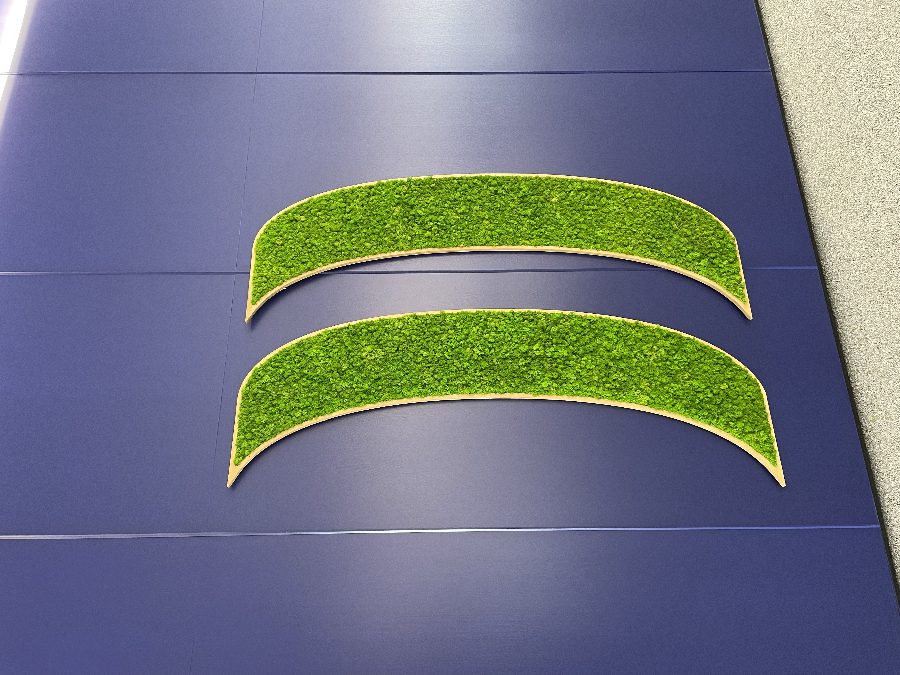
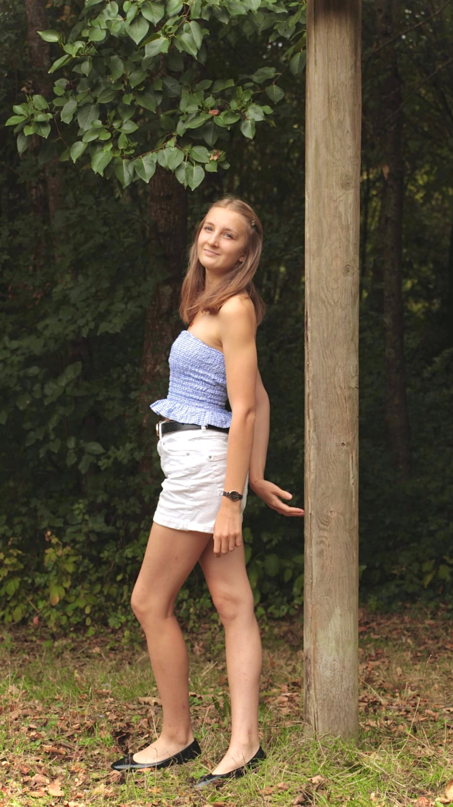

Chroniques Ligériennes
Deux mois, plusieurs événements, beaucoup de découvertes… Bienvenue dans les coulisses de mon stage à la Direction de la Communication de la Région Pays de la Loire.
Découvrir les articlesÀ PROPOS DE MOI
Hello, moi c’est Montaine 👋
J’ai 19 ans et je suis actuellement chargée de production événementielle à la Région Pays de la Loire pour une durée de deux mois.
Ce stage s’inscrit dans la continuité de ma première année de Bachelor Cheffe de Projet Événementiel à ISEFAC Bachelor à Nantes. Parce que la théorie, c’est sympa, mais mettre en œuvre nos connaissances et compétences au service d’une activité que l’on aime, c’est clairement la partie qui fait le plus évoluer.
L’événementiel est un domaine vaste qui prend une toute autre dimension sur le terrain, et qui mérite d’être vécu dans la vraie vie.
Et en bonus ? J’ai la chance d’évoluer au sein d’une équipe aussi bienveillante qu’accueillante… avec une mention spéciale pour les gâteaux régulièrement apportés au bureau 🍰
À travers ce blog, j’ai envie de partager cette expérience telle que je la vis : les découvertes, les défis, les moments marquants et tout ce qui fait le quotidien d’un stage dans l’événementiel.
Bref, je ne vous en dis pas plus, et je vous laisse découvrir tout ça dans mes Chroniques Ligériennes.
À bientôt,
Montaine

À DÉCOUVRIR
Les dernières chroniques


L'EXPÉRIENCE EN CHIFFRES